El Tiempo
Antes de medir el cielo hay que medir cuándo. Recorremos el tiempo desde la intuición cultural hasta el reloj atómico, pasando por los ciclos naturales, la navegación, las escalas astronómicas (día sideral, UTC, día juliano), y por qué la astronomía moderna —VLBI, púlsares, GPS— vive o muere por la precisión temporal.
La astronomía es una ciencia observacional: a diferencia de la matemática o la filosofía, sus modelos se «echan a pelear» contra la naturaleza, y gana el que concuerda con la medición. Y casi todo lo que medimos en el cielo es, en el fondo, una posición en función del tiempo. Por eso esta primera clase de astronomía observacional es entera sobre el tiempo: qué es, cómo lo reducimos a algo operacional, con qué relojes lo capturamos (de la sombra de un palo al cesio-133), qué escalas usamos los astrónomos, y cómo la relatividad terminó por demostrar que el tiempo —ese que creíamos absoluto— en realidad es relativo.
¿Qué es el tiempo? Concepciones
Antes de medirlo, vale la pena reconocer cuántas formas hay de imaginarlo.
El tiempo es notoriamente difícil de definir; todos tenemos un concepto «personal» de él. El profesor lo organiza en cinco pares de oposiciones, que es una buena manera de ordenar las ideas antes de bajar a la física:
- Conceptual vs. real: la vivencia subjetiva («el pasado no existe, el presente es un regalo») frente al tiempo que podemos medir y con el que las cosas evolucionan.
- Cíclico vs. lineal: la visión occidental tiende a ser lineal (parte en el Edén, termina en el Juicio Final). Muchas culturas orientales lo ven cíclico: las cosas parten, terminan y vuelven a partir.
- Pasado y futuro vs. presente.
- Uni- vs. bidireccional: ¿el tiempo solo avanza, o podría «echarse para atrás»? (el modelo del Big Crunch lo permitiría).
- Absoluto vs. relativo: el punto de llegada de la clase. La relatividad de Einstein muestra que el tiempo no es absoluto.
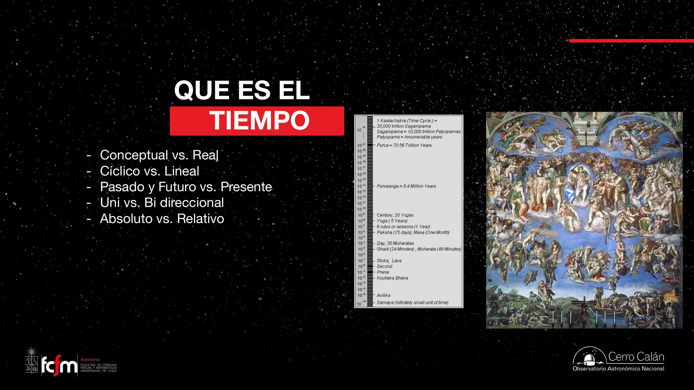
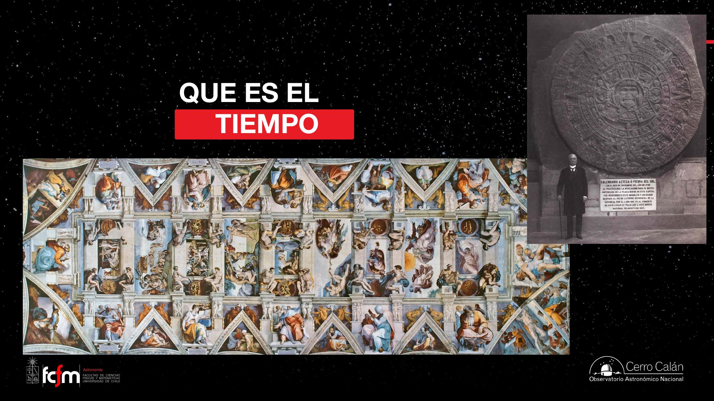
Estas oposiciones tienen eco en cómo modelamos sistemas: un proceso lineal e irreversible (entropía creciente, una pila/log que solo crece) frente a uno periódico y reversible (una señal oscilatoria, un sistema conservativo). Igual que en señales, el primer paso útil es preguntarse si el fenómeno es cíclico o monótono, y si tiene una flecha (dirección preferente) o no.
El tiempo físico y operacional
En física, el tiempo se define por lo que sirve: describir cómo cambian las cosas.
El profesor usa una analogía que a un ingeniero le suena familiar: definir «mesa». No interesa la disquisición filosófica sobre qué es exactamente una mesa; la definición sirve en cuanto ahorra tiempo para comunicarnos. El tiempo físico es igual: una definición operacional, útil mientras nos deje describir y predecir.
Aristóteles definió el tiempo como «el número del movimiento»: una forma circular pero que encapsula la idea de antes y después. La versión moderna es más concreta: ponemos un sistema de coordenadas, describimos la posición de una partícula con un vector , y el tiempo es el índice con el que «pasamos la película» de cómo evoluciona.
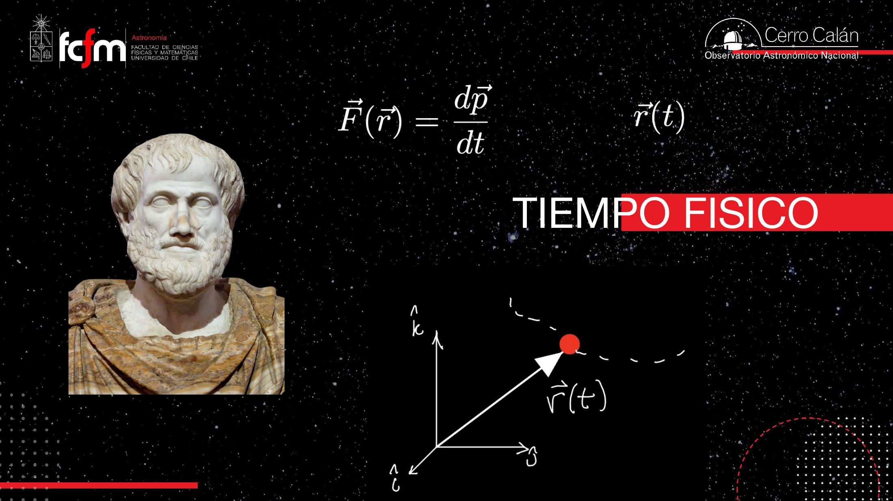
«Gran parte de la física es saber cómo evoluciona un sistema en el tiempo» — y eso es exactamente un sistema dinámico. El profesor lo conecta con la bolsa: la posición de una partícula necesita 2–3 números; el «estado» del mercado, cientos. En ambos casos buscamos la evolución del estado . El tiempo es la variable independiente de tu integrador numérico.
Ciclos naturales: día, mes, año
Los primeros «relojes» fueron los ciclos del cielo, y la astronomía nació de observarlos.
Para medir el tiempo nos fijamos en ciclos de la naturaleza: el Sol que sale y se pone (el día), las fases de la Luna (el mes), y la posición del Sol al salir, que recorre un ciclo anual (el año). Saber estos ciclos no era trivia: servía para cosechar, anticipar migraciones de aves, organizar la vida. De ahí la importancia histórica de la astronomía.
Como las estructuras que sobreviven milenios son las grandes (monumentos), buena parte de la evidencia de esta «astronomía antigua» son alineaciones arquitectónicas. La Gran Pirámide de Giza está casi perfectamente alineada con los puntos cardinales (la rotación terrestre); Stonehenge apunta en una dirección ligada a la latitud y a los solsticios.
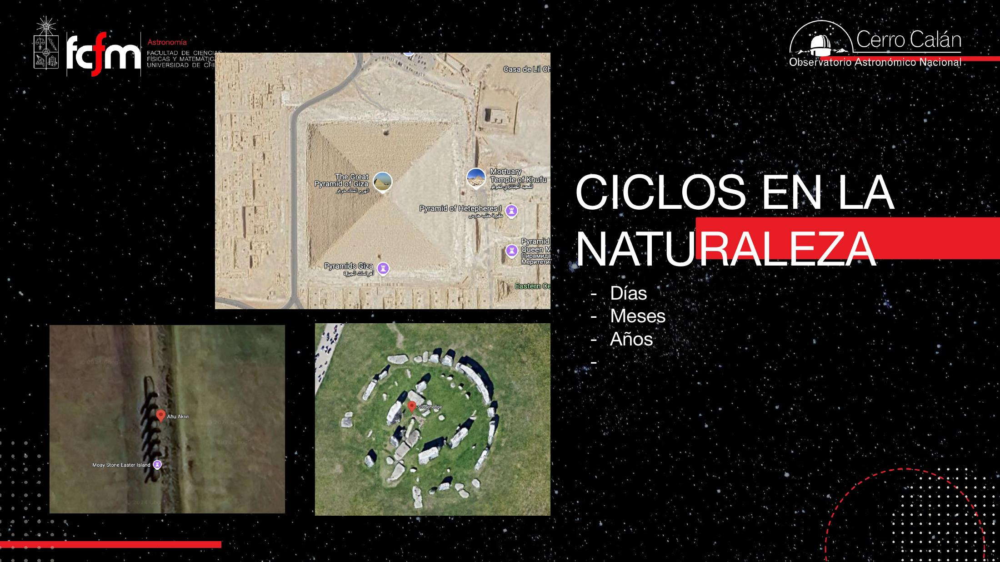
Clavando un palo (un gnomon) se halla el mediodía (sombra mínima) y la dirección N–S (donde el Sol «transita», su punto más alto). De noche, el punto que no se mueve marca el polo; su altura sobre el horizonte es tu latitud (en Santiago, ~33°). Truco de terreno: con el brazo estirado, cada dedo ≈ 1 hora de luz sobre el horizonte (el Sol baja ~15° por hora), y el meñique tapa ~½° (el tamaño angular del Sol o la Luna).
Cómo se mide: del reloj de sol al atómico
Un reloj necesita dos cosas: algo periódico y un mecanismo que registre los ciclos.
La receta de todo reloj es siempre la misma: (1) un fenómeno con periodicidad y (2) un mecanismo que cuente esos ciclos. La historia del reloj es la búsqueda de periodicidades cada vez más estables.
Reloj de sol y reloj de agua (clepsidra)
El reloj de sol usa la sombra del gnomon; el reloj de agua o clepsidra (del griego klepto, robar; hydro, agua: «ladrón de agua») mide cuánto se vacía o llena un recipiente. Funcionan, pero son poco precisos y voluminosos.
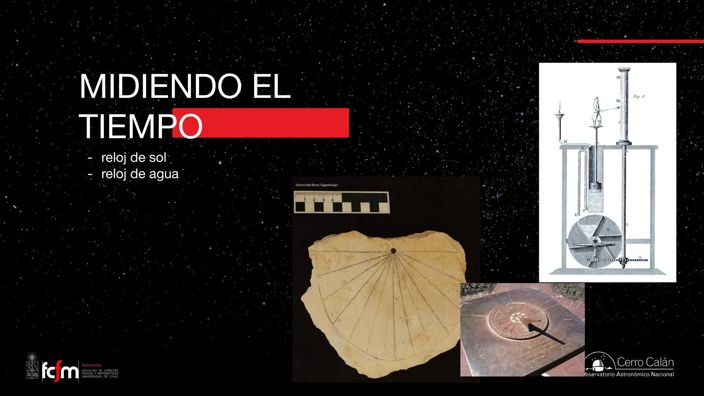
Edad Media: el escape mecánico
Un avance clave fue el escape (un «balancín»): un mecanismo que, alimentado por pesos que caen, convierte ese descenso en un movimiento de vaivén regular que va contando. Pero las piezas de fierro se oxidan, sufren roce y se descalibran; estos relojes había que reajustarlos seguido (de ahí el «cañonazo de las 12» del Santa Lucía, una señal pública para sincronizar relojes).
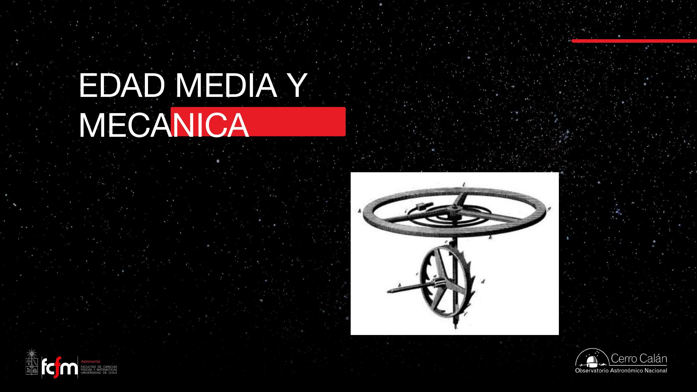
El péndulo: precisión por física, no por mecánica fina
Galileo describió el péndulo y Huygens construyó el reloj de péndulo. Su gracia es que la periodicidad sale de la física, no de la calidad del fierro. Planteando las fuerzas (peso y tensión) y proyectando según el ángulo , se llega a la ecuación del péndulo:
De esa aproximación sale el período, y aquí está lo bonito: por análisis dimensional, la única combinación con unidades de tiempo es
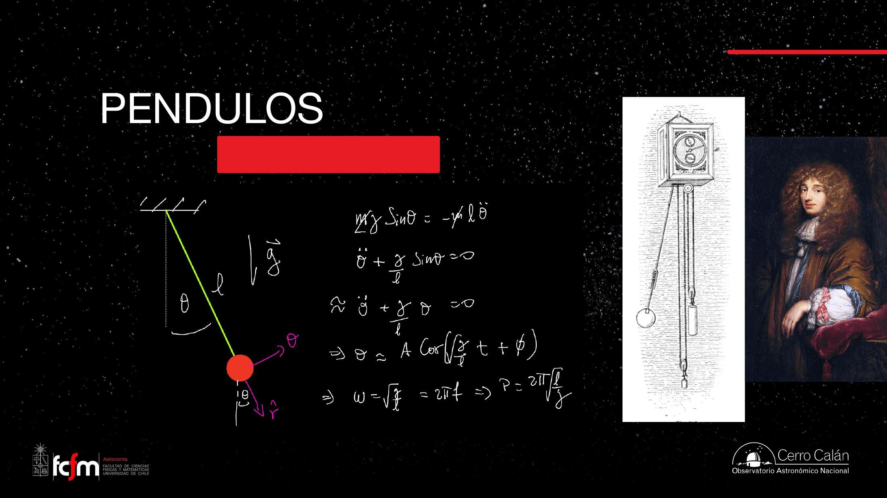
Feedback negativo = restauración hacia un punto de equilibrio = sistema estable (como un controlador que corrige el error). Feedback positivo = el sistema se aleja y «se dispara» (inestabilidad, como el lápiz de punta o ciertos efectos de cambio climático). Toda la teoría de control vive en esta distinción.
Reloj eléctrico: contar la red
Una anécdota con punto físico: el reloj eléctrico contaba las oscilaciones de la corriente alterna. En Chile la red es de 50 Hz (60 Hz en EE. UU.): contaba 50 ciclos y marcaba un segundo. La frecuencia de red no es perfectamente estable, así que la compañía eléctrica la ajustaba a lo largo del año para que se acumularan exactamente los 86 400 s/día. El error acumulado en un año era del orden de 1 segundo (≈1 parte en 30 millones).
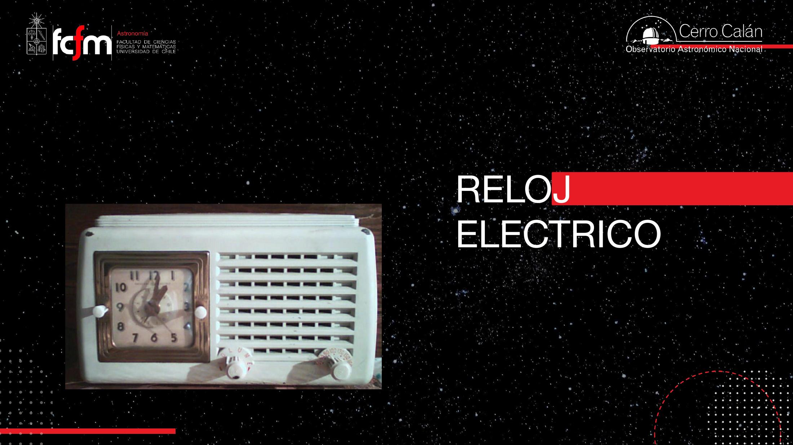
Si te dicen «1 parte en 30 millones», la tentación es pensar que cada segundo es así de preciso. No: ese era el error acumulado en todo el año. Es una lección de propagación de errores: distinguir entre error instantáneo y error acumulado (deriva).
Cuarzo: el efecto piezoeléctrico y el divisor por 2¹⁵
El reloj de cuarzo usa el efecto piezoeléctrico: si aprietas el cristal genera corriente, y si le metes corriente, oscila. Tallado en forma de diapasón, su frecuencia queda fijada por su geometría. El valor estándar es 32 768 Hz, inaudible (~33 kHz) y de bajo consumo.
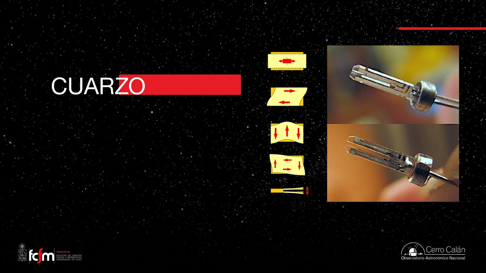
¿Por qué ? Porque un flip-flop divide la frecuencia por 2. Encadenando 15 divisores, : exactamente un segundo. Es el mismo principio del divisor de frecuencia digital. Elegir una potencia de 2 hace que la electrónica sea trivial.
Reloj atómico: el segundo, por definición
El reloj atómico se basa en transiciones entre niveles de energía de un átomo. Un fotón con exactamente la energía de la diferencia entre dos niveles es absorbido, y al decaer se reemite con esa misma energía (un color muy preciso). Contando esos decaimientos se mide el tiempo con altísima estabilidad, sin partes móviles. Se usa una transición del cesio-133; de hecho el segundo se define por un número fijo de ciclos de esa transición (definición un poco circular, pero es el estándar actual).
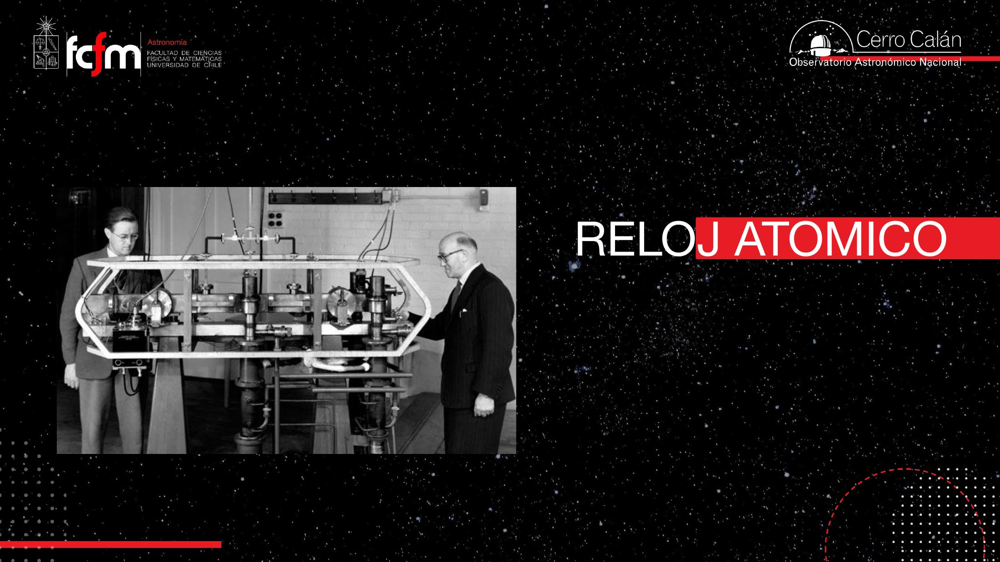
Longitud, navegación y el cronómetro
El gran motor histórico de la precisión temporal: saber dónde estás en el mar.
La Tierra rota 360° en 24 horas, así que 15° de longitud equivalen a 1 hora. De ahí se baja a la equivalencia angular–temporal completa:
La latitud es fácil de medir (altura del polo celeste o de la Estrella Polar). La longitud era el problema: para saber qué tan al este/oeste estás necesitas comparar tu hora local con la hora de un meridiano de referencia. En el s. XVIII Inglaterra ofreció un premio por resolver «el problema de la longitud». Un péndulo no sirve en un barco que cabecea, así que la solución fue doble: durante un siglo se usaron tablas de la posición de la Luna (midiendo cuándo cruzaba ciertas estrellas, calibradas contra Greenwich), hasta que se logró un cronómetro marino robusto. De ahí que el meridiano de Greenwich siga siendo la referencia.
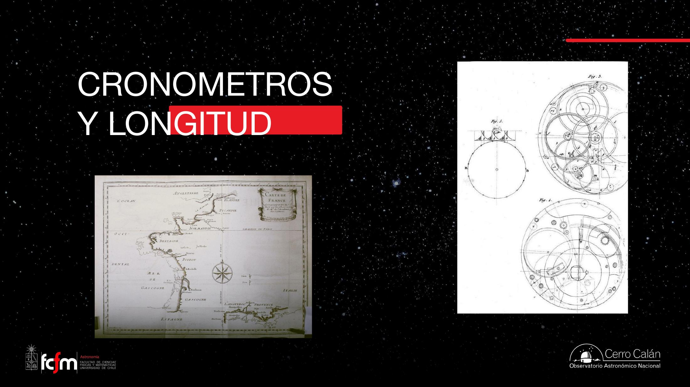
Día solar vs. día sideral; cambio de fecha
«Un día» no es lo mismo que «una vuelta de la Tierra». Difieren en ~4 minutos.
Aquí el profesor desafía la intuición. ¿Qué es un día? No es exactamente una rotación completa de la Tierra. Definimos el día por el Sol: del mediodía (Sol en su punto más alto) al siguiente mediodía. Pero mientras la Tierra da una vuelta sobre su eje, también avanza ~1° en su órbita alrededor del Sol. Para que el Sol vuelva a estar en el mismo lugar, la Tierra debe girar ese gradito de más.
Día sideral: una rotación completa respecto a las estrellas (≈23 h 56 min). Día solar: respecto al Sol (24 h). El solar es ~4 minutos más largo porque la Tierra orbitó un poco. En un año hay una rotación sideral de más que días solares. Caso límite: si la Tierra no rotara, el «día solar» duraría… un año.
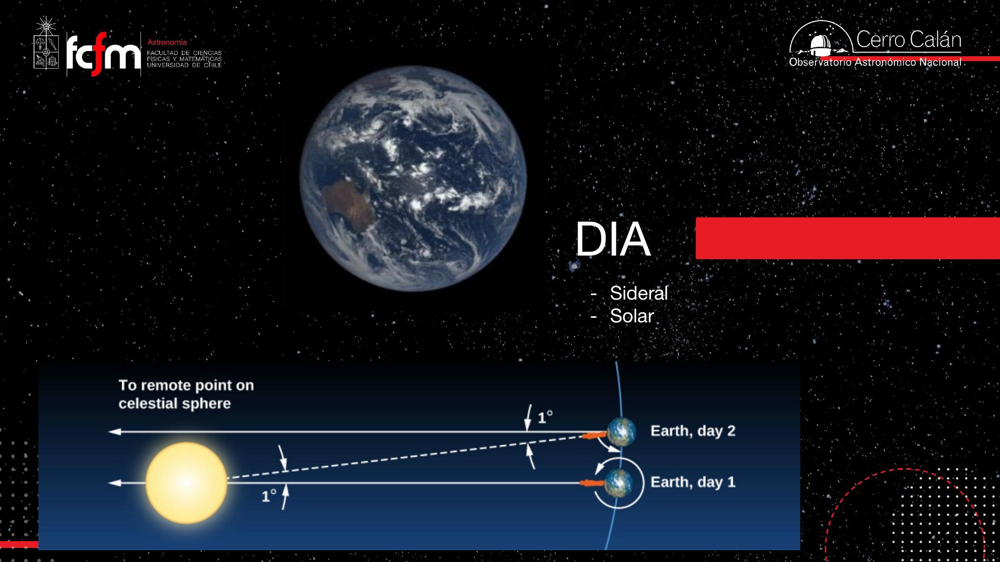
Como las horas pasan en momentos distintos según dónde estés, hace falta una línea de cambio de fecha (en las antípodas de Greenwich) donde se salta de un día al siguiente. De ahí curiosidades como que el ataque a Pearl Harbor sea el 7 de diciembre para EE. UU. y el 8 para Japón.
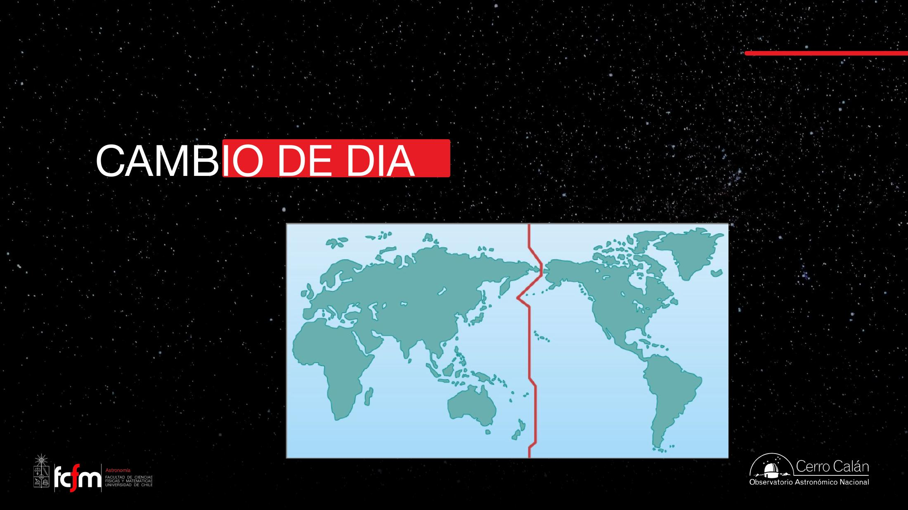
Luna, mareas, eclipses, año y precesión
La Luna mide meses y mueve mareas; el Sol traza el año y precesa el eje.
La Luna da el mes con sus fases (creciente, llena, menguante, nueva). Pero su efecto no es solo visual: las mareas son la diferencia de atracción gravitatoria de la Luna entre el lado cercano y el lejano de la Tierra. El océano adopta una forma alargada y la Tierra rota «dentro» de él; ese roce frena la rotación, alargando los días lentamente (en el futuro lejano, día y mes coincidirán).
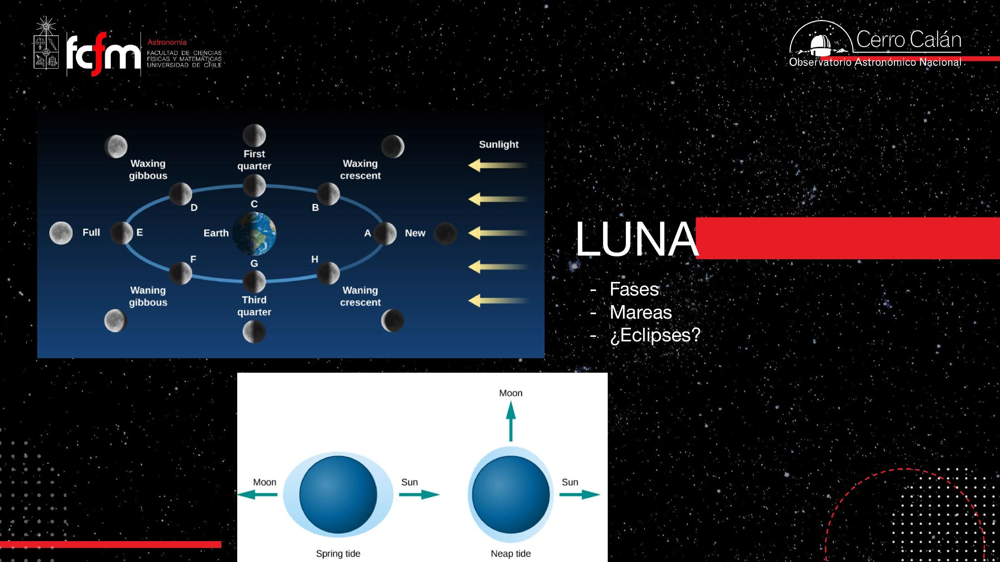
Los eclipses también se predicen con tiempo. La órbita de la Luna no es coplanar con la de la Tierra alrededor del Sol; solo cuando la Luna está en los nodos (donde ambos planos se cruzan) puede haber eclipse. Por eso suelen venir de a pares (uno de Sol y, ~15 días después, uno de Luna).
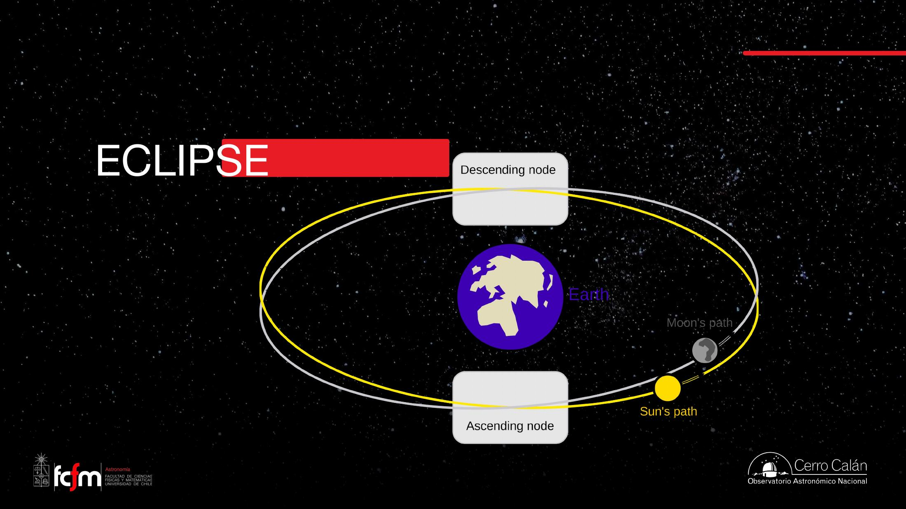
El año es el ciclo del Sol contra el fondo de estrellas: su camino aparente es la eclíptica, donde se ubican las constelaciones del zodíaco (y donde buscamos los planetas). Dato curioso: por la precesión del eje terrestre, las fechas de los «signos» se han corrido ~un signo desde que se definieron, y las constelaciones no tienen tamaños estándar.
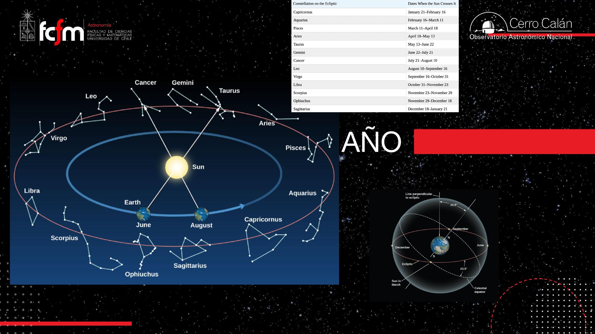
Estándares: UTC, leap second, JD/MJD, ICRS
Para que todos midamos lo mismo, hacen falta convenios cuidadosos —y que cambien poco.
UTC y el segundo intercalar
El Tiempo Universal Coordinado (UTC) es la escala que ordena los eventos para todo el planeta. Se deriva del tiempo atómico (TAI), pero su misión es mantenerse en sincronía con la rotación de la Tierra. El problema: la Tierra no rota a ritmo constante (terremotos, dinámica interna de sus capas la aceleran o frenan en milisegundos día a día). Esas diferencias se acumulan.
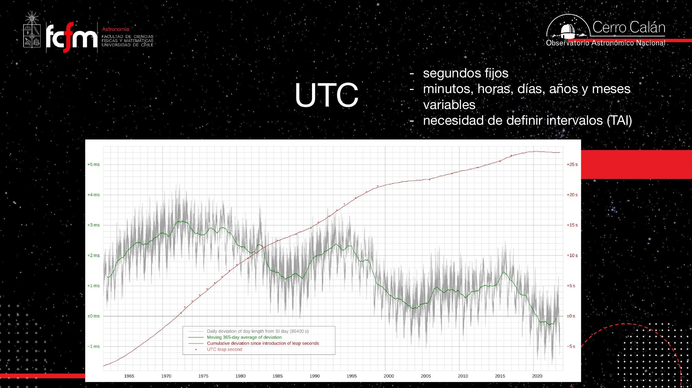
Cuando la diferencia entre UTC y la rotación crece, se intercala un segundo (anunciado ~6 meses antes). Pero esto es histórico: no se puede predecir el UTC futuro con certeza, porque no sabemos cómo va a rotar la Tierra. Solo estimamos que no se desviará más de un par de segundos.
Día Juliano (JD) y MJD
Aunque usamos el calendario gregoriano (con su regla de bisiestos: divisible por 4, salvo los siglos no divisibles por 400), los astrónomos contamos el tiempo con el Día Juliano: una cuenta corrida de días desde el 12:00 del 1 ene 4713 a.C., anterior a cualquier evento histórico (así todas las fechas son positivas y restar fechas es trivial).
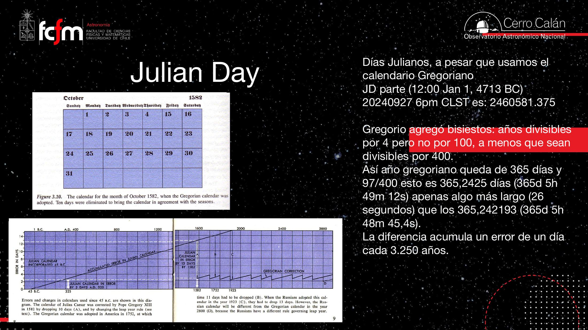
El MJD (Modified Julian Day) = . Se introdujo (SAO, era Sputnik, ~1957) para ahorrar dígitos en la memoria de los computadores de los años 50: los primeros 6 números del JD casi no cambian, son «relleno». El .5 hace que el MJD empiece a medianoche (y no al mediodía como el JD), de modo que casi toda una noche de observación cae en el mismo MJD. Cuando guardas una imagen astronómica, su timestamp suele estar en este formato dentro del archivo.
Un marco que no se mueva: ICRS
Para medir posiciones necesitamos un sistema de referencia estable. Las estrellas cercanas se mueven (movimiento propio). La solución: anclarse a los cuásares (QSOs), agujeros negros supermasivos tan lejanos que no notamos movimiento relativo con ellos. Ese es el ICRS (International Celestial Reference System), materializado por el catálogo de radiofuentes ICRF. Midiendo nuestra posición contra los cuásares sabemos, por ejemplo, cuánto cambia la rotación/traslación terrestre.
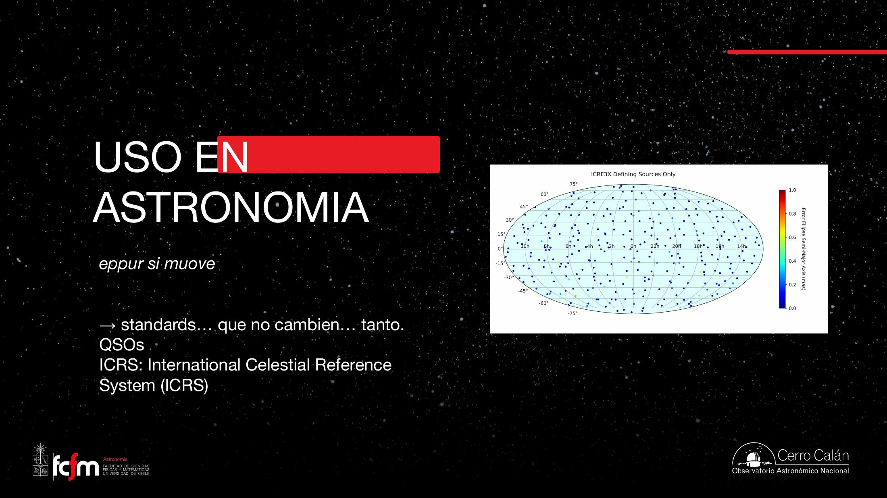
¿Para qué tanta precisión? VLBI y púlsares
Dos ejemplos donde el tiempo exquisito hace posible lo imposible.
La foto del agujero negro (EHT / VLBI)
La resolución de un telescopio mejora con el tamaño de su apertura. El truco del Event Horizon Telescope fue combinar antenas repartidas por el planeta para sintetizar una apertura del tamaño de la Tierra (interferometría de muy larga base, VLBI). Pero no hay Internet capaz de transmitir en tiempo real el mismo fotón captado en sitios distintos. La solución: cada sitio (Polo Sur, ALMA, Hawái, Arizona, México, España…) grabó sus datos en discos, cada uno con su reloj atómico, y después se correlacionaron buscando la diferencia de tiempo que alinea la misma señal en todas las antenas.
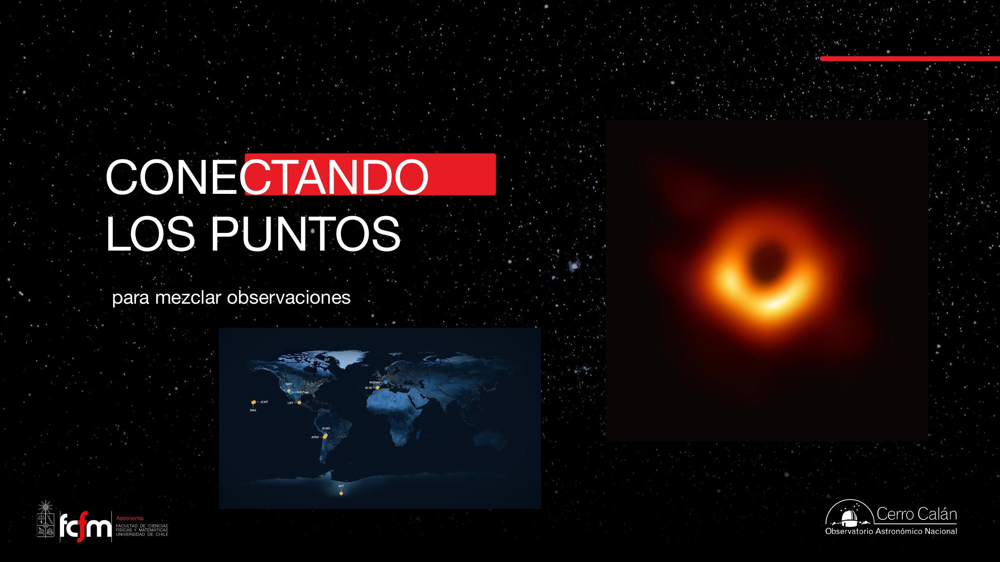
VLBI es correlación de señales: buscas el desfase temporal que maximiza la correlación cruzada entre dos streams ruidosos. La precisión del reloj fija el límite de coherencia. Es exactamente el problema de sincronizar dos grabaciones con una cross-correlation, pero a escala planetaria y con timestamps de nanosegundos.
Cronometraje de púlsares
Un púlsar es una estrella de neutrones que gira rapidísimo y emite un haz muy regular: un reloj natural. Midiendo variaciones diminutas en el tiempo de llegada de sus pulsos se detecta el bamboleo inducido por un compañero. Así se descubrió el primer exoplaneta (PSR B1257+12, 1992), con una precisión en el período del orden de nanosegundos.
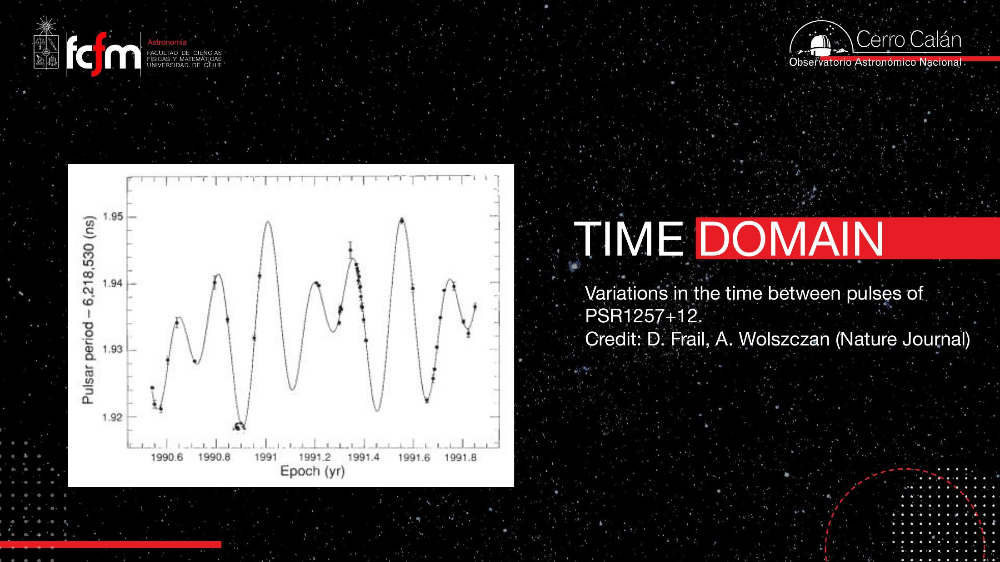
El tiempo es relativo: relatividad
El tiempo «absoluto» de Newton se rompe con la electricidad y la luz.
En mecánica clásica (Newton) el tiempo es absoluto: todos medimos el mismo. Eso funcionó por siglos, pero el s. XIX trajo dos problemas.
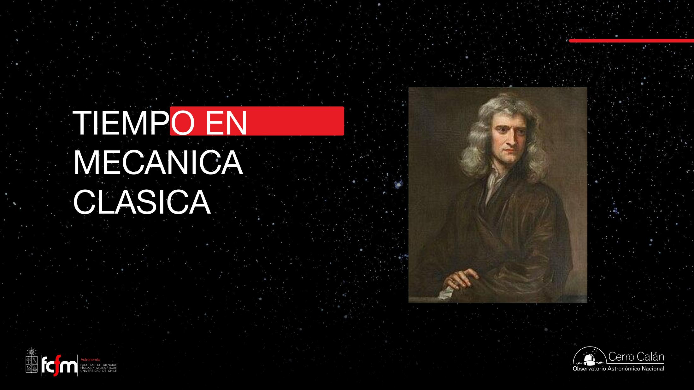
(1) Maxwell: sus ecuaciones dan una onda —la luz— que no es «covariante» si el tiempo es absoluto: un voltaje que mides como 5 V, otro observador en movimiento lo mediría distinto. Eso permitiría que «la luz esté prendida para uno y apagada para otro», lo cual es absurdo. (2) Michelson–Morley: midieron la velocidad de la luz en distintas direcciones mientras la Tierra se mueve a 30 km/s, esperando ver el «éter». No vieron ninguna diferencia: la luz tiene la misma velocidad para todos los observadores.
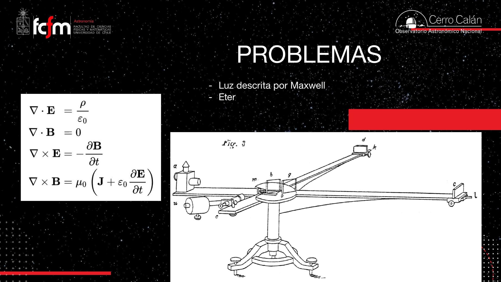
La única transformación entre observadores que respeta esto es la transformación de Lorentz, que mezcla espacio y tiempo. Su consecuencia: el tiempo y las distancias cambian con la velocidad. El tiempo es relativo.
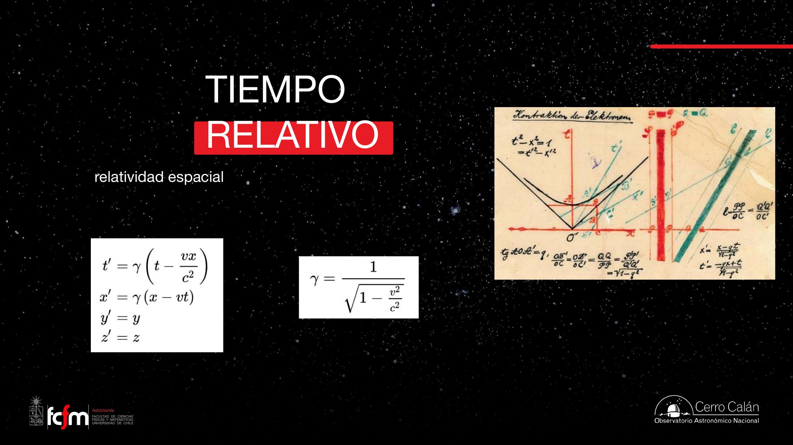
Imagina un reloj que rebota un pulso de luz arriba y abajo. Para quien viaja con él, la luz sube y baja recto. Para nosotros, que lo vemos pasar, la luz recorre una diagonal más larga (el reloj avanzó). Como la velocidad de la luz es la misma para ambos, el viajero debe «hacer las cosas más lento»: su tiempo pasa más despacio. La fórmula sale de pura geometría (Pitágoras sobre esos triángulos).
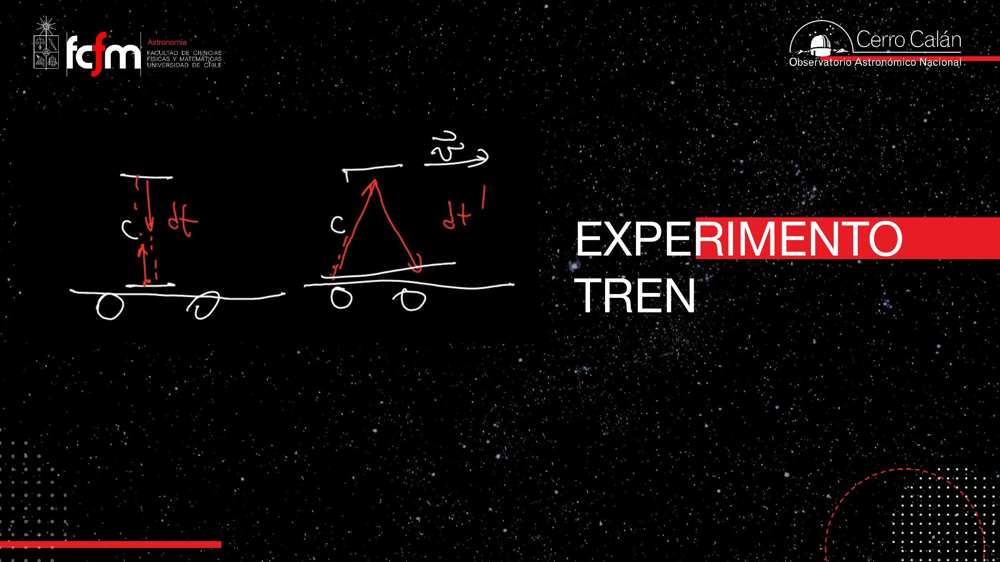
Relatividad general: la gravedad también curva el tiempo
El tiempo no solo cambia con la velocidad, sino también con la gravedad (principio de equivalencia: aceleración y gravedad son indistinguibles localmente). La luz se curva al pasar cerca de una masa —se midió el desvío de 1,75 arcsec junto al Sol durante un eclipse—, y el propio tiempo corre distinto según el campo gravitatorio.
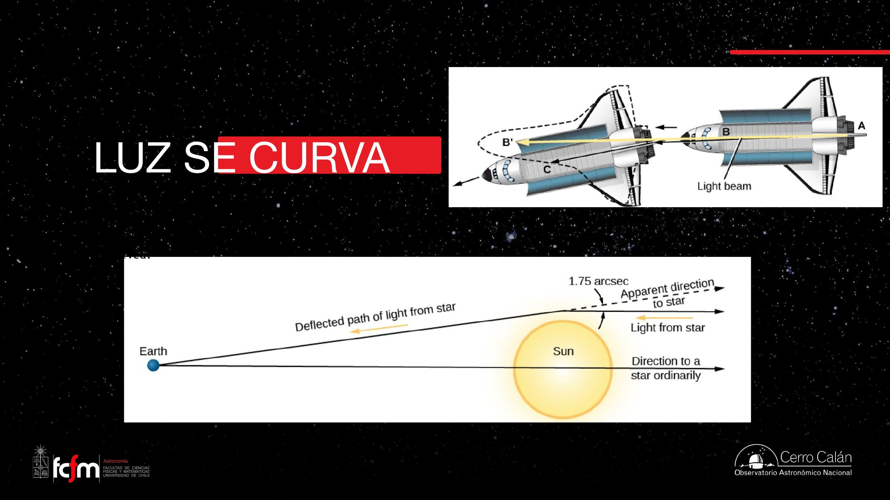
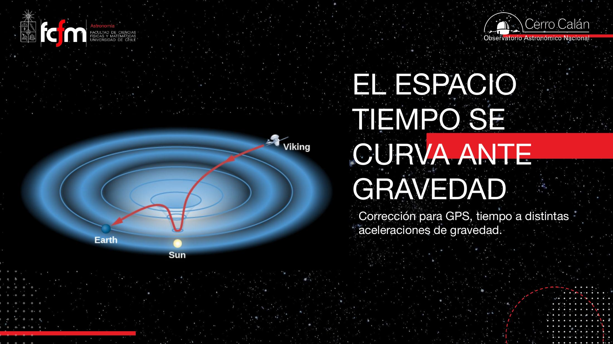
Sin la corrección relativista, los relojes del GPS se desviarían varios microsegundos por día ⇒ errores de posición de kilómetros acumulándose. La relatividad no es esotérica: está embebida en el firmware de tu teléfono.
La flecha del tiempo: cosmología
La escala más grande de todas, y el límite más pequeño de todos.
La escala temporal definitiva es la del universo. El fondo cósmico de microondas (CMB) es la primera luz que pudo escapar cuando el universo se hizo transparente, unos 380 000 años tras el Big Bang. Esos fotones se han ido enfriando: de ~3 000 K en la recombinación a ~2,7 K hoy. El Big Bang ocurrió hace ~13,8 mil millones de años.
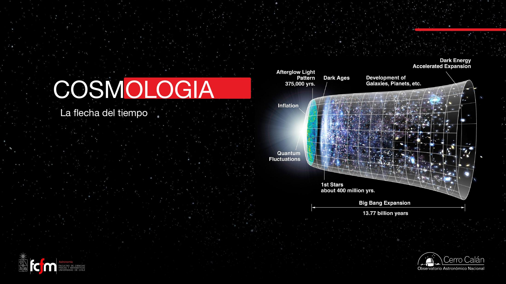
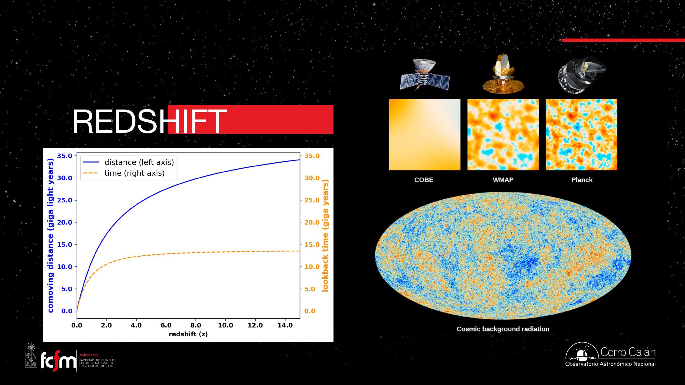
El universo nos parece continuo, pero la física cuántica sugiere que no lo es: existe una escala de Planck (~ s) bajo la cual el tiempo no se puede subdividir. Entre el segundo intercalar (escala humana) y la escala de Planck hay decenas de órdenes de magnitud: el tiempo abarca un rango colosal.
Mensaje central: el tiempo se mide con muchísimo cuidado porque casi toda la astronomía depende de él —de la longitud en el mar al GPS, del VLBI a los exoplanetas por timing. Y, paradójicamente, ese tiempo que medimos con tanto esmero no es absoluto. En la próxima clase: espectros y cómo los átomos absorben en longitudes de onda precisas (la base, entre otras cosas, del propio reloj atómico).
Conceptos clave
Tabla de repaso rápido.
| Concepto | Qué es / valor | Por qué importa |
|---|---|---|
| Tiempo operacional | Parámetro de la dinámica, | «El número del movimiento»: describe cómo evolucionan los sistemas |
| Receta de un reloj | Periodicidad + mecanismo que cuenta | Marco común desde el reloj de sol al atómico |
| Período del péndulo | No depende de la masa; precisión por física, no por mecánica | |
| Cuarzo | 32 768 = Hz, piezoeléctrico | 15 flip-flops dividen a 1 Hz exacto |
| Reloj atómico | Transición del cesio-133 | Define el segundo del SI |
| 15° = 1 hora | 360°/24 h; 15″ = 1 s de tiempo | Longitud ↔ tiempo: navegación y cronómetro |
| Día sideral vs. solar | 23 h 56 min vs. 24 h (~4 min) | El solar es más largo por el avance orbital de la Tierra |
| UTC / leap second | Atómico, atado a la rotación terrestre | La Tierra no rota uniforme ⇒ se intercalan segundos |
| JD / MJD | JD desde 4713 a.C.; MJD = JD − 2 400 000,5 | Cuenta corrida de días; MJD ahorra dígitos y empieza a medianoche |
| Año gregoriano | 365,2425 d (bisiesto /4, no /100, sí /400) | Error de 1 día cada ~3 250 años |
| ICRS (cuásares) | Marco de referencia con QSOs lejanos | Estándar «que no se mueve» para medir posiciones |
| VLBI / EHT | Antenas globales + relojes atómicos | Apertura del tamaño de la Tierra; foto de M87 |
| Timing de púlsares | Precisión de nanosegundos | Primer exoplaneta (PSR B1257+12, 1992) |
| Factor de Lorentz | Dilatación temporal: el tiempo es relativo | |
| GPS | Corrección relativista (especial + general) | Sin ella, error de km/día |
| CMB / Big Bang | 380 000 yr; ~2,7 K hoy; ~13,8 Gyr | La flecha del tiempo a escala cosmológica |
Exámenes de práctica
10 exámenes de 5 preguntas (3 de alternativas autocorregibles + 2 de respuesta escrita).